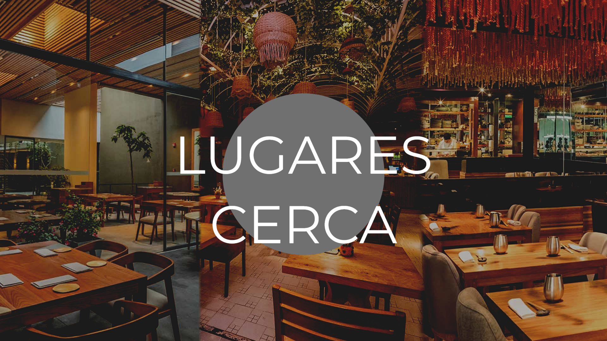
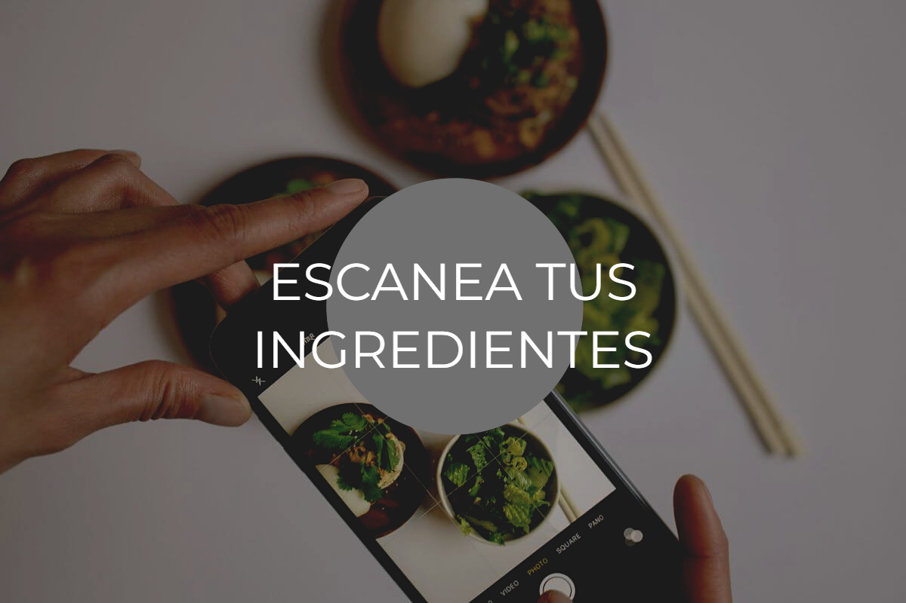
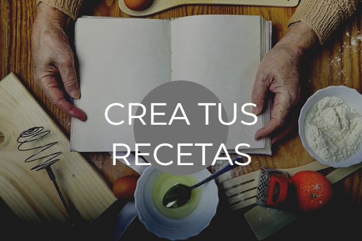

<ion-app>

  <ion-menu contentId="main-content">
    
    <ion-header>
      <ion-toolbar color="transparent" >
        <ion-title>Menú</ion-title>
      </ion-toolbar>
    </ion-header>

    <ion-content class=" listado-menu ion-no-padding " >
      <ion-list >
        <ion-item >
          <ion-label routerLink="/pagina1" >Mi cuenta</ion-label>
        </ion-item>
        <ion-item>
          <ion-label routerLink="/animaciones">Animaciones</ion-label>
        </ion-item>
        <ion-item>
          <ion-label>¿?</ion-label>
        </ion-item>
        <ion-item>
          <ion-label routerLink="/configuracion">Configuración</ion-label>
        </ion-item>
        <ion-item>
          <ion-label routerLink="/login">Cerrar Sesión</ion-label>
        </ion-item>
      </ion-list>
    
    </ion-content>

  </ion-menu>


  <div class="ion-page" id="main-content">
    <ion-header>
      <ion-toolbar>
        <ion-buttons slot="start">
          <ion-menu-button></ion-menu-button>
        </ion-buttons>
        
        <div class="hcs">
          
          <ion-title></ion-title>   
        </div>
      </ion-toolbar>
    </ion-header>

    <ion-content class="ion-no-padding">

      

      <ion-card id="img">
        
      </ion-card>

      <ion-card id="img">
        
      </ion-card>

      <ion-card id="img">
        
      </ion-card>

      <ion-card id="img">
        
      </ion-card>


        

      <ion-fab slot="fixed" vertical="bottom">
        <ion-fab-button size="small" color="warning">
          <ion-icon name="add"></ion-icon>
        </ion-fab-button>
        <ion-fab-list side="end">
          <ion-fab-button>
            <ion-icon name="chatbubbles-outline"></ion-icon>
          </ion-fab-button>
          <ion-fab-button>
            <ion-icon name="key-outline"></ion-icon>
          </ion-fab-button>
          <ion-fab-button>
            <ion-icon name="location-outline"></ion-icon>
          </ion-fab-button>
        </ion-fab-list>
      </ion-fab>

    </ion-content>
  </div>


</ion-app>